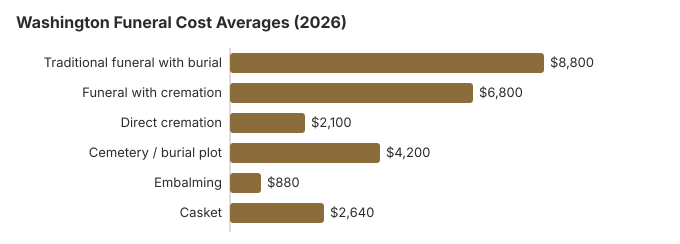

Funeral Costs in Washington: What Families Pay in 2026
Washington Funeral Prices Item by Item
These are our Washington estimates. The Department of Licensing licenses homes but has no say over their prices, which run high in Seattle and lower east of the Cascades.
| Line | Estimate | Range seen |
|---|---|---|
| Traditional funeral with burial | $8,800 | $6,600 – $11,440 |
| Funeral with cremation | $6,800 | $5,440 – $8,840 |
| Direct cremation | $2,100 | $1,470 – $2,940 |
| Cemetery / burial plot | $4,200 | $2,100 – $8,400 |
| Embalming | $880 | $500 – $1,500 |
| Casket | $2,640 | $880 – $7,040 |
Before you rely on this table: the Washington figures are estimates from our own model, not prices gathered from Washington funeral homes, and not a quote or professional advice. Our method and disclaimer set out how far to trust them.
State sources: Washington State Department of Licensing; RCW 36.39.030; RCW 73.08.070; RCW 18.39.195.

Washington Cremation and Burial Pages
For more on each route:
Cremation Costs in Washington
Three in four Washington families, 76%, cremate. Direct cremation starts near $2,100 and a service brings it to $6,800; urns and scattering rules are covered.
Burial Costs in Washington
A Washington burial, with a plot near $4,200 plus casket, vault, marker and opening, comes to $19,920-$24,420.
Why Washington Prices Vary
Several things push a Washington bill around.
Puget Sound land and wages cost more than the Spokane area or the farm towns, and that shows in quotes. With 76% of Washington families choosing cremation, the state's cremation providers compete hard on price.
Washington Buyers' Rights
Washington Charges to Query
A few add-ons account for most Washington surprises.
- Embalming called compulsory. Washington homes must refrigerate or embalm on receipt, and must tell you state law rarely requires embalming.
- Vault rules: a cemetery may insist on its own vault or liner, adding $500-$2,000 or more.
- Bundles that hide unwanted items. Under the federal rule a Washington home must price each item separately as well.
Washington's Wider Choice of Methods
Washington has more legal choices than most states, and in 2019 it became the first to legalize human composting, which took effect in May 2020: natural organic reduction (human composting), alkaline hydrolysis, green burial, direct cremation and body donation are all mainstream here. Washington also lets a person name an agent for final arrangements in writing, and that choice outranks even a spouse (RCW 68.50.160), which settles disputes about cost and method before they start, even among a family's grown children. If money is tight, several cost far less than the $8,800 traditional funeral. Our green burial and direct cremation guides apply in full here.
Washington: Cremate or Bury?
Cremation
- About $2,100 direct
- About $6,800 with a service
- No grave required
- Ashes kept, placed or scattered
- 76% of Washington families choose it
Traditional Burial
- About $8,800 for the funeral
- About $4,200 for the plot
- A vault or liner is normally expected
- A permanent grave
- Metal caskets: $2,500 national median (NFDA 2023 General Price List Study); Washington sellers differ
Washington Prices by City
Our estimates for Washington's larger cities:
Lower-Cost Washington Funerals
| Choice | Roughly | What it covers |
|---|---|---|
| Direct cremation | $2,100 | Cremation only; a permit is needed but Washington sets no waiting time (RCW 70.58A.210). |
| Direct burial | $4,400 | Burial with no viewing or service, the plainest way to bury. |
| Green burial | $4,840 | A shroud or plain casket and no embalming, where a cemetery has a natural section. |
| Cremation + memorial | $6,800 | Cremation now, memorial later |
| Traditional funeral | $8,800 | Viewing, service and burial |
More ideas: affordable funeral options and paying for a funeral with no money.
Help With Washington Funeral Costs
- Social Security: $255, paid once to an eligible spouse or child who claims within two years.
- Final expense insurance: policies typically pay $5,000 to $25,000.
- Paying over time: a few Washington homes offer it, but get the interest and terms on paper.
Educational Resources
- Payment Assistance GuideGovernment programs and financial help for funeral costs
- Funeral Insurance GuideCompare final expense and burial insurance options
- Funeral Consumers AllianceIndependent nonprofit consumer advocacy for funeral rights
- Best Burial Insurance CompaniesSide-by-side comparison of top burial insurance providers
- FTC Funeral RuleThe federal rule protecting funeral consumers
- Insurance Plan ComparisonCompare coverage, premiums, and payout speed across providers
Compare Funeral Costs
- Direct Cremation: Most Affordable OptionNFDA 2023 median $2,645 with a family-supplied container (latest available)
- Cremation vs. Burial Cost ComparisonSide-by-side price comparison to help you decide
- How to Compare Funeral PricesStep-by-step guide to getting the best price
- Cheapest Funeral OptionsLower-cost alternatives, with typical price ranges
- Average Funeral Cost in 2026National cost breakdown with real prices
- Funeral Cost BreakdownEvery line item explained: know what you're paying for
Arranging a Washington Funeral
In this order, these steps avoid the costliest mistakes:
- Choose the method first: cremation in Washington or burial in Washington.
Washington death certificates: $25 a copy
Every certified copy of a Washington death record costs $25, set by RCW 70.58A.560 and the Department of Health (checked October 29, 2026). The same $25 is charged for a search that finds nothing, and no fee is refunded. Copies for a VA pension or compensation claim are free under the same statute.
- Online or by phone: VitalChek (1-866-687-1464) adds an $8.50 vendor fee and a $7 DOH processing fee, so one copy starts at $40.50; orders ship within three to seven business days.
- By mail: Center for Health Statistics, P.O. Box 9709, Olympia, WA 98507, with a check or money order to the Department of Health. This is the cheapest route but takes weeks.
- In person: many local health departments, such as King County's, issue copies the same day.
Only qualified applicants, mainly family and legal representatives, get a certified copy, and they must send ID and proof of the relationship. At $25 apiece, five copies cost $125, so ask each bank or insurer whether a copy it can return or an informational copy will do.
Washington's licensing board, county duties and veterans cemeteries
The Funeral and Cemetery Board within the Washington State Department of Licensing licenses funeral directors and homes; 360-664-1555 checks a license or opens a complaint.
Washington is not one of the nine states on the Funeral Consumers Alliance list that require a director for some after-death steps, so a family may handle much of the work itself. Someone still has to file the death certificate and get the disposition permit, and cremation needs that permit but no waiting period (RCW 70.58A.210).
Indigent and unclaimed deaths
When neither relatives nor a church claim the body of an indigent person, the county commissioners must arrange the disposition (RCW 36.39.030), and counties also pay for an indigent veteran's (RCW 73.08.070). (Source: RCW 36.39.030; RCW 73.08.070.) Social Security's $255 is paid to a surviving spouse or child, never to the funeral home, and has to be claimed within two years.
Veterans
Tahoma National Cemetery in Kent (425-413-9614) and Vancouver Barracks National Cemetery (503-273-5250, cremated remains only) are both booked by the funeral home, which calls the VA's National Cemetery Scheduling Office (800-535-1117). The state's own Washington State Veterans Cemetery at Medical Lake (509-299-6280) deals with families directly.
Five Washington steps
- Ask every Washington funeral home for its General Price List, which the FTC Funeral Rule requires it to hand you in person. RCW 18.39.195 goes further: a director must give accurate prices when you ask by phone, text or email, provide a written itemized statement before the service, and bill a "cash advanced" item only at the net amount actually paid.
- Settle the embalming and viewing question early; dropping them saves the most.
- For an indigent death, call the county medical examiner or coroner before choosing a home.
- For a veteran, ask about Tahoma or Medical Lake before buying a private plot.
- A home that hides its prices can be reported to the board at 360-664-1555.
Frequently Asked Questions
What does a Washington funeral cost today?
About $8,800 for a traditional funeral, $6,800 for a service with cremation and from $2,100 for direct cremation; the traditional figure is close to the $8,300 US median. Burial adds around $4,200 in cemetery costs.
How much cheaper is cremation in Washington?
Yes, by $6,700 or more. Direct cremation is about $2,100 and a traditional funeral with burial about $8,800 before the plot. Natural burial and newer methods such as human composting are also widely available in the state.
What rights do Washington funeral buyers have?
The federal Funeral Rule (16 CFR 453) entitles you to an itemized price list, prices by phone and the use of a casket or urn bought elsewhere with no handling fee, and RCW 18.39.195 adds price quotes by text or email. Washington does not require a funeral director for every step (Funeral Consumers Alliance). Complaints go to the Department of Licensing, 360-664-1555.
What cuts the cost of a Washington funeral?
Put three price lists side by side, cut every item you do not want, and choose direct cremation (about $2,100) if price comes first. Natural burial sections, where a cemetery has them, often cost 30-50% less than its standard plots.
Is embalming legally required in Washington?
No. Under RCW 18.39.215, a funeral home must refrigerate or embalm a body as soon as it receives it, and must tell the family that state law does not require embalming except under certain Board of Health conditions. Embalming also requires authorization from the person with the right to control disposition.
Without that authorization a Washington funeral home has no basis to bill the roughly $880 this page estimates for embalming, and the Department of Licensing (360-664-1555), which licenses funeral homes, takes complaints about such charges.
Is Washington pricier than other states?
Slightly above. Our $8,800 Washington figure is near the $8,300 national median; prices in the West run higher than in most regions.
What is the cheapest option in Washington?
Direct cremation, from about $2,100. Direct burial is the next step up at about $4,400, which is $4,400 below a traditional Washington funeral.
Where are lower-cost providers in Washington?
Line up direct cremation prices (about $2,100 here) from several homes, and ask whether they also offer natural organic reduction or alkaline hydrolysis, both legal in Washington.
When the University of Washington's Willed Body Program accepts a donor, it pays for transport and cremation and then either mails the ashes to a named recipient or buries them in its communal site at Evergreen-Washelli; the family pays only for any plot it chooses. Families who need a fallback should still get one funeral home's direct cremation price in case the program cannot accept the body.